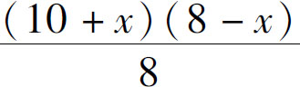
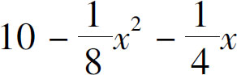

接下来，我们就要进行初中代数最核心的内容的学习了．将要学习的二次方程，就是教我们怎么改变世界的．二次方程为什么就能改变世界呢？
什么叫改变世界，怎么改变世界？我们平时在工作生活之中的每一次选择，都是在改变世界．比如，你出售的商品怎么定价？你今天晚上学习到几点？你明天想去哪儿玩？你开车的时候时速是多少？你的所有选择，都在改变世界．因为我们的选择既可以让自己周围的世界变好一点点，也可能让它变糟糕一点点，这种改变如果只有一两次，看起来好像很微弱，但是一旦它像指数一样累积起来，就会发生翻天覆地的变化．那么，我们的选择跟二次方程又有什么关系呢？接下来，我们就看看二次方程在工作、学习和生活中的应用．
先以工作问题为例．假设你是一个商店的老板，对于正在出售的每一件商品，你都有权力调整它的价格，但同时你必须知道，无论这个商品卖得太贵还是太便宜，都赚不到钱．如果定的价格太高了，客户就都不来买你的货了；定价太低了，虽然买货的人多，但是每件商品的利润太低了，最终仍然是赚不到多少钱．那么价格怎么定才最合理呢？有人说，价格差不多就行了．这个说法倒是没错，不但定价是差不多就行了，天下所有的事都是差不多就成了．但是就一件具体的商品而言，到底是3.6元差不多，还是4.2元差不多呢？真要解决具体问题的时候，一是一，二是二，必须对问题进行定量分析，不能光讲大道理．那这个问题怎么求解呢？
首先，我们得做个调查，知道周围最多能有多少客户买东西；其次，要知道这个东西最高能卖到多少，也就是说价格定到多高以后刚好就没人来买了．只要有这两个数字，就能开工干活了．假如这件商品的进货价是12元钱，周围有1000个客户能买这件东西，经过调研发现，当卖到22元钱的时候，就一个客户都不来买了．于是我们就知道了定价范围在12元和22元之间．这其中大概有10元的利润空间．换句话说，当我们把这件东西卖12元钱的时候，1000个客户都来买我们的东西．而如果我们抬高了售价，每卖贵1元，来的客户就会减少一些，直到卖到22元钱的时候，就一个客户都不来了．因为一共有1000个客户，一共有10元钱的利润空间，所以我们可以简单地认为，每卖贵1元，就少来100个客户．比如：我们要卖13元，客户就会少来100个，于是就只有900个客户来买；同理，如果卖14元呢，就是800个客户来买；依此类推，卖到21元的时候就只剩下100个客户了；卖到22元，就没人来了．有了这样的假设，我们就可以算算怎么样更赚钱了．
假设每一件商品能够赚的利润是x ，此时来的客户数量是多少呢？客户最大数是1000个，每贵1元钱少来100个，贵了x 元就少来100x 个，因此，客户数量就是1000－100x ．那我们把利润x 和客户数量1000－100x 两者相乘一下，得到x （1000－100x ），按照乘法分配律，就得到了1000x －100x 2 ．因为算式中出现了x 2 ，因此它就属于一个二次方程的问题．那么这个方程怎么解，对不起，暂时保密．接下来我们还要继续分析学习的问题．
我问你：今天晚上你打算几点睡觉呢？一般情况下，我们在分析睡觉问题的时候，都把它当作一个生活习惯问题，我们只知道充足的睡眠可以保障健康，但它跟二次方程有什么关系呢？接下来我们就一起来分析：假设人每天需要8个小时睡眠，如果你把用来睡觉的x 小时挤出来学习，那么，每天你就多学x 点的知识；但是因为你睡觉少了，第二天你在课堂上就会犯困，导致学习质量下降，因此你又少学了一点东西．问题在于，你用x 小时学来的东西多，还是因为犯困少学的东西多？这就得继续往下分析！假设你每天正常的学习时间是10个小时，如若你在精神充足的条件下，挤占x 个小时后，第二天学习的时间就是10＋x ，但问题在于你占用睡觉时间，不可能精力充沛了．现在，你的睡眠时间只剩下8－x 个小时了，我们用8－x 除以正常睡觉的时间8小时，得到的比例就是你的睡眠质量．进一步假设第二天的学习效率和睡眠质量相等，那么，第二天的学习效果就是学习总时间乘以学习效率也就是

，化简以后得到
，是不是也是一个二次式呢？你以为只有这个问题需要二次方程吗？实际上如果我们按照这种思维方式往下分析，连你的台灯多高也得用二次方程求解．那你说，我不学习了，开车出去玩一会儿总可以吧．那我问你，这车开多快最省油？如果你开得太快了，车遇到的风阻就会特别大，部分能量就白费了；可是如果你开得慢了，你烧的油大部分就都变成热量散失了．什么样的速度最省油呢？这仍然是一个二次方程的问题．除此之外，长度一样的两条路面，一条是平的，另一条要下坡以后再上坡，哪一条路跑起来更快呢？你可能会说这不是一个简单的几何问题吗？肯定是直线的路面最短最快，你要是这么认为，就大错特错了，一旦你用了代数方程求解就又会发现，看起来有点弯曲的路面反而是快的！
你发现了没有，无论是在工作、学习中，还是在生活中，二次方程真是无所不在．记得我们讲二元一次方程组的时候，也举过工作和生活中的例子．但我要告诉你的是，在绝大多数情况下，我们遇到的问题实际上都是二次问题，而不是二元问题．它们的区别在于，二元问题，需要我们对两件不同的事做出选择；而二次问题要求我们对同一件事的不同方式不同程度做出选择．在面对这类问题的时候，要记住孔子的话：“过犹不及！”其实，东西卖得太贵或太便宜了都不行，学习和休息要结合起来．但是你要知道，这只是一个定性的描述，而不是一个定量的表达，究竟定在多少才是最合适的，这才是问题的关键．